Корпуса микросхем
Микросхемы класса In line Package
Микросхемы класса In line Package предназначены для сквозного монтажа в отверстиях в печатной плате.
Можно запаять эти микросхемы, как микросхемы для поверхностного монтажа, загнув выводы под углом в 90 градусов, или полностью их выпрямив.
DIP-корпус
DIP-корпус(англ. Dual In-Line Package) — корпус с двумя рядами выводов по длинным сторонам микросхемы. В зависимости от количества выводов микросхемы, после слова «DIP» ставится количество ее выводов. Например, микросхема, а точнее, микроконтроллер atmega8 имеет 28 выводов. Следовательно, ее корпус будет называться DIP28.
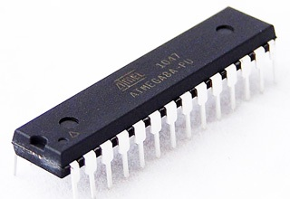
Корпус DIP28

Корпус DIP16
Корпус DIP может быть выполнен из пластика (что в большинстве случаев) и называется он PDIP, а также из керамики — CDIP. На ощупь корпус CDIP твердый как камень, так как он сделан из керамики.
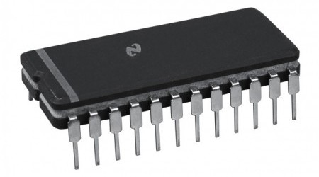
CDIP-корпус
Имеются также модификации DIP корпуса: HDIP, SDIP.
HDIP (Heat-dissipating DIP) — теплорассеивающий DIP. Такие микросхемы пропускают через себя большой ток, поэтому сильно нагреваются. Чтобы отвести излишки тепла, на такой микросхеме должен быть радиатор.
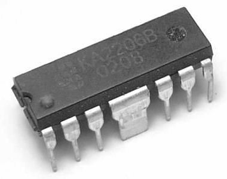
HDIP-корпус
(посередине два крылышка-радиатора)
SDIP (Small DIP) — маленький DIP. Микросхема в корпусе DIP, но c маленьким расстоянием между ножками микросхемы.
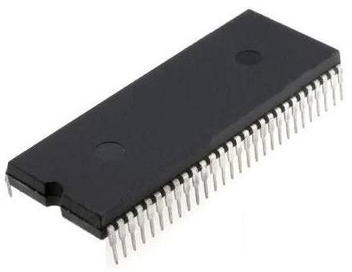
SDIP-корпус
SIP корпус
SIP корпус (Single In line Package) — плоский корпус с выводами с одной стороны. Очень удобен при монтаже и занимает мало места. Количество выводов также пишется после названия корпуса.
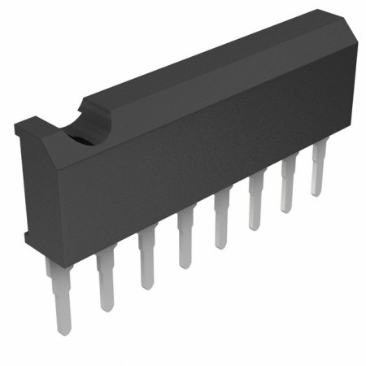
Корпус SIP8
У SIP тоже есть модификации — это HSIP (Heat-dissipating SIP). То есть тот же самый корпус, но уже с радиатором
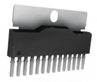
HSIP-корпус
ZIP-корпус
ZIP (Zigzag In line Package) — плоский корпус с выводами, расположенными зигзагообразно.
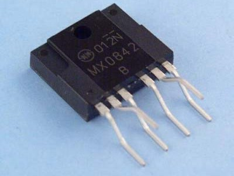
Корпус ZIP6 (цифра — количество выводов:
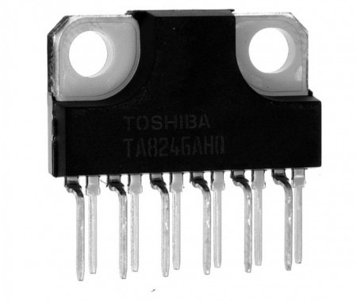
Корпу HZIP с радиатором
Корпуса микросхем для поверхностного монтажа
(SMD-компоненты, планарные компоненты)
Такие микросхемы запаиваются на поверхность печатной платы, под выделенные для них печатные проводники (контактные площадки).
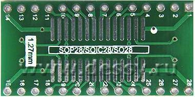
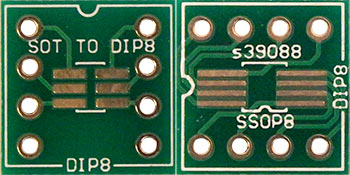
Контактные площадки для поверхностного монтажа
SOIC-корпус
Самым большим представителем этого класса микросхем являются микросхемы в корпусе SOIC (Small-Outline Integrated Circuit) — маленькая микросхема с выводами по длинным сторонам. Она очень напоминает DIP, но ее выводы параллельны поверхности самого корпуса.
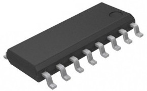
Корпус SOIC16
(Цифра после «SOIC» обозначает количество выводов микросхемы
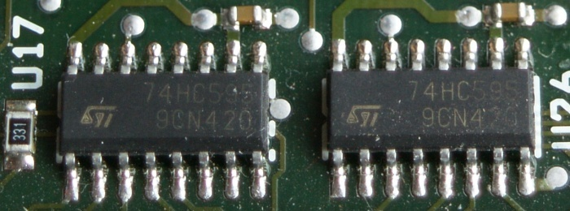
Микросхемы в SOIC-корпусе припаянные на плате
SOP корпус
SOP (Small Outline Package) — то же самое, что и SOIC.
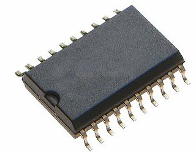
Корпус SOP20
Модификации корпуса SOP
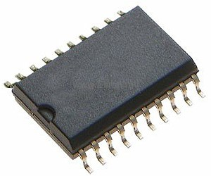
PSOP — пластиковый корпус SOP
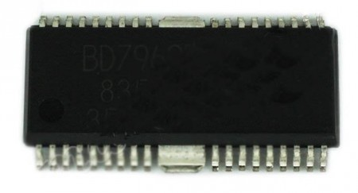
HSOP — теплорассеивающий SOP. Маленькие радиаторы посередине служат для отвода тепла.
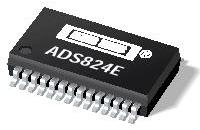
Корпус SSOP28
SSOP(Shrink Small Outline Package) — 'сморщенный' SOP. То есть еще меньше, чем SOP корпус
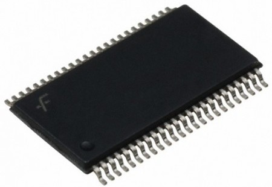
Корпус TSSOP
TSSOP(Thin Shrink Small Outline Package) — тонкий SSOP. Её толщина меньше, чем у SSOP. В основном в корпусе TSSOP делают микросхемы, которые прилично нагреваются. Поэтому, площадь у таких микросхем больше, чем у обычных.
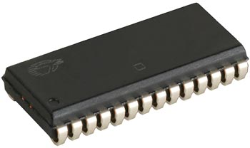
Корпус SOJ
SOJ — тот же SOP, но ножки загнуты в форме буквы «J» под саму микросхему.
QFP корпус
QFP (Quad Flat Package) — четырехугольный плоский корпус. Главное отличие от SOIC в том, что выводы размещены на всех сторонах такой микросхемы.
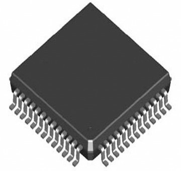
Корпус QFP52
Модификации:
- PQFP — пластиковый корпус QFP.
- CQFP — керамический корпус QFP.
- HQFP — теплорассеивающий корпус QFP.
- TQFP (Thin Quad Flat Pack) — тонкий корпус QFP. Его толщина намного меньше, чем у QFP.

Корпуса TQFP
PLCC корпус
PLCC (Plastic Leaded Chip Carrier) и СLCC (Ceramic Leaded Chip Carrier) — соответственно пластиковый и керамический корпус с расположенными по краям контактами, предназначенными для установки в специальную панельку, в народе называемую «кроваткой». Типичным представителем является микросхема BIOS компьютеров.
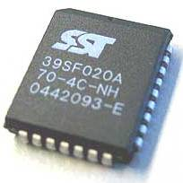 |
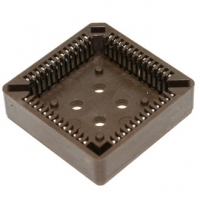 |
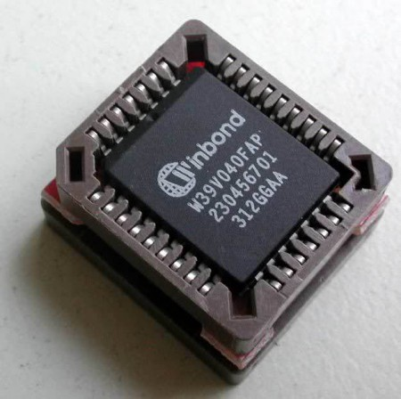 |
| Микросхема BIOS | «Кроватка» для таких микросхем | Микросхема в "кроватке". |
Иногда такие микросхемы называют QFJ, из-за выводов в форме буквы «J»
PGA корпус
PGA (Pin Grid Array) — матрица из штырьковых выводов. Представляет из себя прямоугольный или квадратный корпус, в нижней части которого расположены выводы-штырьки
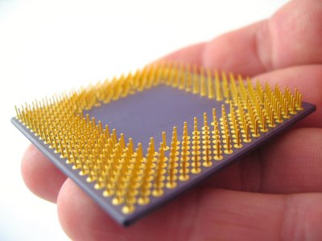
Такие микросхемы устанавливаются также в специальные кроватки, которые зажимают выводы микросхемы с помощью специального рычажка.
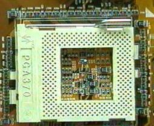
В корпусе PGA в основном делают процессоры на персональные компьютеры.
Корпус LGA
LGA (Land Grid Array) — тип корпусов микросхем с матрицей контактных площадок. Чаще всего используются в компьютерной технике для процессоров.
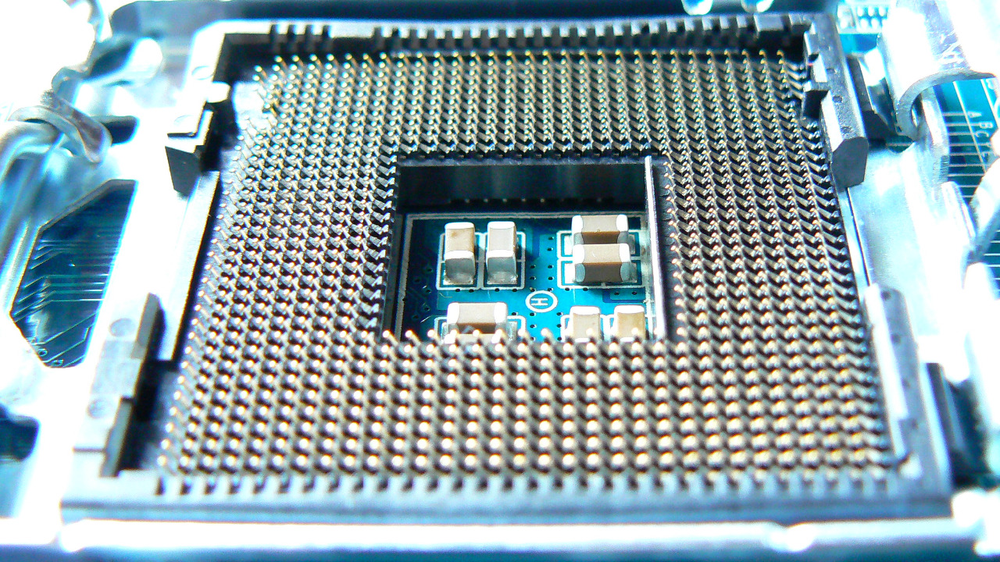
Кроватка для микросхем в корпусе LGA
(можно увидеть подпружиненные контакты)
Сама микросхема имеет просто металлизированные площадки.
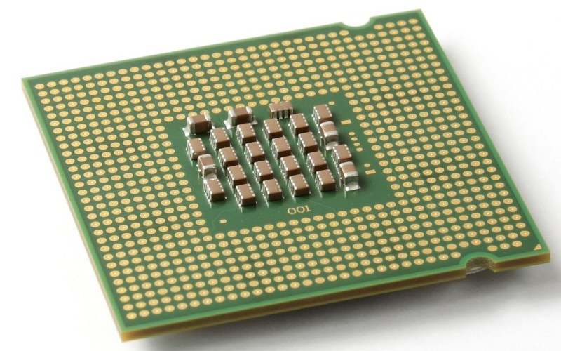
Микросхема процессора ПК в корпусе LGA
Для того, чтобы все работало, должно выполняться условие: микропроцессор должен быть плотно прижат к кроватке. Для этого используются разного рода защелки.
Корпус BGA
BGA (Ball Grid Array) — матрица из шариков.
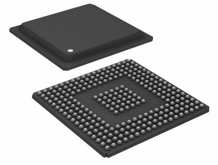
Корпус BGA
В корпусе BGA выводы заменены припойными шариками. На одной такой микросхеме можно разместить сотни шариков-выводов. Экономия места на плате просто фантастическая. Поэтому микросхемы в корпусе BGA применяют в производстве мобильных телефонов, планшетах, ноутбуках и в других микроэлектронных девайсах.
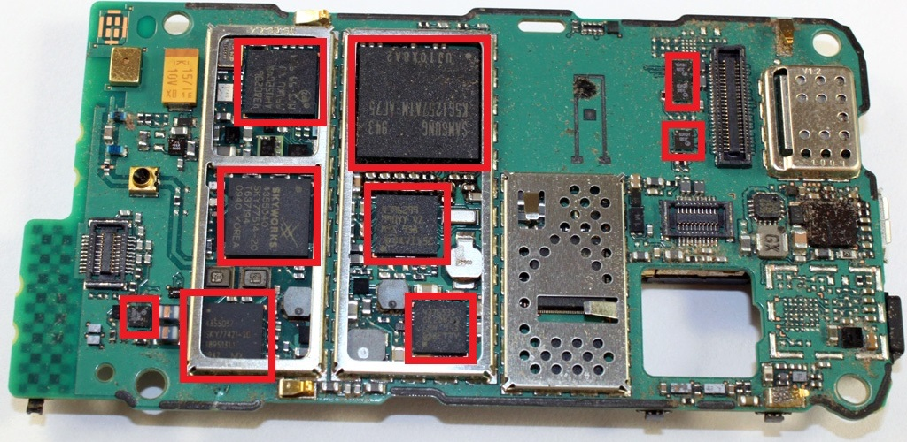
Микросхемы в корпусе BGA на плате мобильного телефона.
Технология BGA является апогеем микроэлектроники. В настоящее время мир перешел уже на технологию корпусов microBGА, где расстояние между шариками еще меньше, и можно уместить даже тысячи(!) выводов под одной микросхемой!

Таблица 1
8-28-выв. пластмассовые SO (D/DW) корпуса

| Кол-во выводов, N | 8 | 14 | 14 | 16 | 16 | 16 | 20 | 20 | 24 | 28 | 28 | |
| Обозначение корпуса по ГОСТ 17467-88 |
4303Ю.8-А | 4306.14-А | 4313.14-В | 4307.16-А | 4311Ю.16-А | 4314. 16-А | 4321. 20-В | 4316. 20-А | 4322. 24-А | 4325. 28-А | 4323. 28-А | |
| JEDEC Аналог | MS-012AA | MS-012AB | MO-046AA | MS-012 AC | MS-013AA | MO-046AB | MS-013AC | MO-046AC | MS-013AD | MO-059AD | MS-013AE | |
| Суффикс | D | D | D | D | DW | D | DW | D | DW | D | DW | |
| Размеры, мм | ||||||||||||
| A | min | 1.35 | 1.35 | 1.35 | 2.35 | 2.35 | 2.35 | 2.35 | 2.35 | |||
| max | 1.75 | 1.75 | 2.20 | 1.75 | 2.65 | 2.20 | 2.65 | 2.20 | 2.65 | 3.05 | 2.65 | |
| A1 | min | 0.10 | 0.10 | 0.10 | 0.10 | 0.10 | 0.10 | 0.10 | 0.10 | 0.10 | 0.05 | 0.10 |
| max | 0.25 | 0.25 | 0.30 | 0.25 | 0.30 | 0.30 | 0.30 | 0.30 | 0.30 | 0.35 | 0.30 | |
| В | min | 0.33 | 0.33 | 0.36 | 0.33 | 0.33 | 0.36 | 0.33 | 0.36 | 0.33 | 0.35 | 0.33 |
| max | 0.51 | 0.51 | 0.50 | 0.51 | 0.51 | 0.50 | 0.51 | 0.50 | 0.51 | 0.50 | 0.51 | |
| С | min | 0.19 | 0.19 | 0.18 | 0.19 | 0.23 | 0.18 | 0.23 | 0.18 | 0.23 | 0.14 | 0.23 |
| max | 0.25 | 0.25 | 0.32 | 0.25 | 0.32 | 0.32 | 0.32 | 0.32 | 0.32 | 0.32 | 0.32 | |
| D | min | 4.80 | 8.55 | 8.84 | 9.80 | 10.10 | 10.07 | 12.60 | 12.60 | 15.20 | 17.70 | 17.70 |
| max | 5.00 | 8.75 | 9.20 | 10.00 | 10.50 | 10.50 | 13.00 | 13.00 | 15.60 | 18.50 | 18.10 | |
| Е | min | 3.80 | 3.80 | 5.60 | 3.80 | 7.40 | 5.60 | 7.40 | 5.60 | 7.40 | 8.23 | 7.40 |
| max | 4.00 | 4.00 | 5.80 | 4.00 | 7.60 | 5.80 | 7.60 | 5.80 | 7.60 | 8.90 | 7.60 | |
| е | nom | 1.27 | 1.27 | 1.27 | 1.27 | 1.27 | 1.27 | 1.27 | 1.27 | 1.27 | 1.27 | 1.27 |
| e1 | nom | 5.72 | 5.72 | 7.62 | 5.72 | 9.53 | 7.62 | 9.53 | 7.62 | 9.53 | 11.43 | 9.53 |
| Н | min | 5.80 | 5.80 | 7.84 | 5.80 | 10.00 | 7.84 | 10.00 | 7.84 | 10.00 | 11.50 | 10.00 |
| max | 6.20 | 6.20 | 8.20 | 6.20 | 10.65 | 8.20 | 10.65 | 8.20 | 10.65 | 12.70 | 10.65 | |
| h | min | 0.25 | 0.25 | 0.25 | 0.25 | 0.25 | 0.25 | 0.25 | 0.25 | |||
| max | 0.50 | 0.50 | 0.50 | 0.75 | 0.75 | 0.75 | 0.75 | 0.75 | ||||
| L | min | 0.40 | 0.40 | 0.60 | 0.40 | 0.40 | 0.60 | 0.40 | 0.60 | 0.40 | 0.40 | 0.40 |
| max | 1.27 | 1.27 | 1.27 | 1.27 | 1.27 | 1.27 | 1.27 | 1.27 | 1.27 | |||
| а | min | 0° | 0° | 2° | 0° | 0° | 2° | 0° | 2° | 0° | 0° | 0° |
| max | 8° | 8° | 10° | 8° | 8° | 10° | 8° | 10° | 8° | 8° | 8° | |
Таблица 2

8-64-выв. пластмассовые DIP (N/NS) корпуса
| Обозначение по ГОСТ 17467-88 |
2101.8-А | 2102Ю.14-В | 2103Ю.16-Д | 2104.18-А | 2140.20-В | 2142.24-А | 2121.28-С | 2138Ю.30-А | 2123.40-С | 2171Ю.42-А | 2151Ю.52-А | 2151Ю.56-А | - | |
| Кол-во выводов, N | 8 | 14 | 16 | 18 | 20 | 24 | 28 | 30 | 40 | 42 | 52 | 56 | 64 | |
| JEDEC Аналог | MS-001BA | MS-001AA | MS-001BB | MS-001 AC | MS-001 AD | MS-001AF | MS-О11АВ | MO-026BB | MS-011AC | MS-020AB | MS-020AD | MS-020AD | SOT 274-1 | |
| Суффикс | N | N | N | N | N | N | N | NS | N | NS | NS | NS | NS | |
| А | max | 5.33 | 5.33 | 5.33 | 5.33 | 5.33 | 5.33 | 6.35 | 5.08 | 6.35 | 5.08 | 5.08 | 5.08 | 5.84 |
| Ai | min | 0.38 | 0.38 | 0.38 | 0.38 | 0.38 | 0.38 | 0.38 | 0.51 | 0.38 | 0.51 | 0.51 | 0.51 | 0.51 |
| A2 | min | 2.92 | 2.92 | 2.92 | 2.92 | 2.92 | 2.92 | 3.18 | 3.05 | 3.18 | 3.05 | 3.05 | 3.05 | 3.05 |
| max | 4.95 | 4.95 | 4.95 | 4.95 | 4.95 | 4.95 | 4.95 | 4.57 | 4.95 | 4.57 | 4.57 | 4.57 | 4.57 | |
| В | min | 0.36 | 0.36 | 0.36 | 0.36 | 0.36 | 0.36 | 0.36 | 0.36 | 0.36 | 0.38 | 0.38 | 0.38 | 0.4 |
| max | 0.56 | 0.56 | 0.56 | 0.56 | 0.56 | 0.56 | 0.56 | 0.58 | 0.56 | 0.56 | 0.56 | 0.56 | 0.53 | |
| B2 | min | 1.14 | 1.14 | 1.14 | 1.14 | 1.14 | 1.14 | 0.77 | 0.76 | 0.77 | 0.89 | 0.89 | 0.89 | 0.8 |
| max | 1.78 | 1.78 | 1.78 | 1.78 | 1.78 | 1.78 | 1.78 | 1.40 | 1.78 | 1.14 | 1.14 | 1.14 | 1.3 | |
| С | min | 0.20 | 0.20 | 0.20 | 0.20 | 0.20 | 0.20 | 0.20 | 0.20 | 0.20 | 0.23 | 0.23 | 0.23 | 0.23 |
| max | 0.36 | 0.36 | 0.36 | 0.36 | 0.36 | 0.36 | 0.38 | 0.36 | 0.38 | 0.38 | 0.38 | 0.38 | 0.38 | |
| D | min | 8.51 | 18.67 | 18.67 | 22.35 | 24.89 | 31.24 | 35.10 | 26.67 | 50.30 | 36.58 | 45.72 | 45.72 | 57.7 |
| max | 10.16 | 19.69 | 19.69 | 23.37 | 26.92 | 32.51 | 39.70 | 28.49 | 53.20 | 37.08 | 46.23 | 46.23 | 58.67 | |
| Е | min | 7.62 | 7.62 | 7.62 | 7.62 | 7.62 | 7.62 | 15.24 | 9.91 | 15.24 | 15.24 | 15.24 | 15.24 | 19.05 |
| max | 8.26 | 8.26 | 8.26 | 8.26 | 8.26 | 8.26 | 15.87 | 11.05 | 15.87 | 16.00 | 16.00 | 16.00 | 19.61 | |
| E1 | min | 6.1 | 6.1 | 6.1 | 6.1 | 6.1 | 6.1 | 12.32 | 7.62 | 12.32 | 12.70 | 12.70 | 12.70 | 16.9 |
| max | 7.11 | 7.11 | 7.11 | 7.11 | 7.11 | 7.11 | 14.73 | 9.40 | 14.73 | 14.48 | 14.48 | 14.48 | 17.2 | |
| е | nom | 2.54 | 2.54 | 2.54 | 2.54 | 2.54 | 2.54 | 2.54 | 1.778 | 2.54 | 1.778 | 1.778 | 1.778 | 1.778 |
| e2 | nom | 7.62 | 7.62 | 7.62 | 7.62 | 7.62 | 7.62 | 15.24 | 10.16 | 15.24 | 15.24 | 15.24 | 15.24 | 19.05 |
| L | min | 2.92 | 2.92 | 2.92 | 2.92 | 2.92 | 2.92 | 2.92 | 2.54 | 2.92 | 2.54 | 2.54 | 2.54 | 2.8 |
| max | 3.81 | 3.81 | 3.81 | 3.81 | 3.81 | 3.81 | 5.08 | 3.81 | 5.08 | 3.56 | 3.56 | 3.56 | 3.2 | |
| а | min | 0° | 0° | 0° | 0° | 0° | 0° | 0° | 0° | 0° | 0° | 0° | 0° | 0° |
| max | 10° | 10° | 10° | 10° | 10° | 10° | 10° | 10° | 10° | 10° | 10° | 15° | 15° | |
Чертежи корпусов DIP импортных микросхем
DIP8
DIP14
DIP16
CDIP16
DIP18
CDIP18
DIP20
CDIP20
DIP22
DIP24
DIP28
DIP32
DIP36
DIP40
DIP42
DIP48
DIP52
DIP64